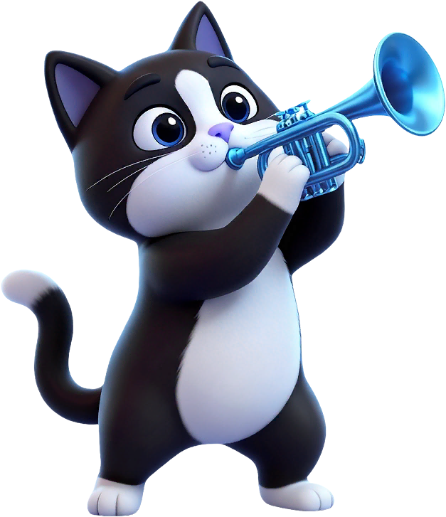
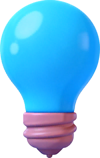
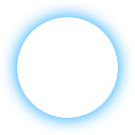
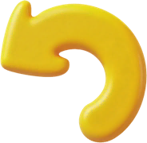

把每一步推理，
放进猫咪的棋盘里。
Meowdoku 是一款猫咪主题的轻量逻辑拼图。玩家在不同尺寸的棋盘上放置猫咪，逐步满足行、列、相邻和颜色区域规则；主线负责成长，Daily 负责每天回来。

先统一产品边界
猫咪主题逻辑拼图
轻量、治愈、可持续游玩。核心差异来自规则推理、猫咪表现和每日回访。
Android 竖屏
首版重点保证手机和平板竖屏可用，横屏和分屏暂不纳入。
本地题库 + Daily
题目随应用资源包发布，离线也能游玩；Daily 根据日期确定性选择。
| 产品区域 | 首版要回答的问题 | 状态 |
|---|---|---|
| 主线 | 玩家如何理解规则、完成一关、进入下一关？ | 核心 |
| Daily | 玩家如何每天打开、挑战、完成并看到自己的表现？ | 核心 |
| 外围 | 设置、教程、连胜、反馈是否让产品更完整？ | 配套 |
| 商业化 | 广告如何换取道具和复活，同时不阻断主玩法？ | 配套 |
| 暂不做 | 在线排行榜、赛季、CMS 实时关卡、内购、账号云存档 | 范围外 |
主玩法：每一步都可解释
2.1 一局游戏怎么发生 #
玩家要做什么
- 在每一行放置一只猫，最终总数等于棋盘尺寸。
- 用行、列、相邻和区域关系排除不可能位置。
- 生命耗尽进入失败页；完成所有行进入完成页。
- 退出后再次进入，继续当前残局而不是从零开始。
棋盘规则
2.2 规则和棋盘尺寸 #
| 规则 | 要求 | 玩家感知 |
|---|---|---|
| 行 | 每行最多一只猫，完成时每行恰好一只 | 同一行其他位置被排除 |
| 列 | 同一列不能出现两只猫 | 纵向冲突有明确反馈 |
| 相邻 | 上下、左右、四个对角位置不能同时放猫 | 八邻域位置被排除 |
| 颜色区域 | 同一颜色区域内不能出现两只猫 | 区域规则需要在棋盘上容易识别 |
| 关卡 | 默认节奏 | 设计目的 |
|---|---|---|
| 1—10 | 4、4、5、5、6、5、5、6、6、7 | 先理解规则，再逐渐引入更大棋盘 |
| 11—20 | 6、6、6、6、7、6、7、6、7、8 | 建立稳定的中前期习惯 |
| 21—50 | 6、7、6、7、8、6、7、8、7、8 循环 | 增加节奏变化，并开放更多外围能力 |
| 51—100 | 6、7、8、7、9、6、7、8、9、10 循环 | 进入中后期，出现更高难度题型 |
| 101+ | 7、8、7、9、10、7、8、9、8、10 循环 | 保持长期成长和尺寸变化 |
2.3 动态难度与题库 #
不是固定关卡映射
代码持久化 current_strategy，再按进度上限、AB 随机和 Hard/Special 分支选择 rank/tier。
看上一关完成状态
6—50 关需连续 2 次 clean win；51 关后每次 clean win 可升档，均不超过当前阶段上限。
失败阈值可确认
6—20 关累计 1 次失败，21 关以后累计 2 次失败；DDA 额外模式再处理重试/道具/复活。
2.4 道具、草稿和自动标记 #

给出一步推理
高亮当前可理解的下一步，不直接展示整局答案。

定位正确位置
揭示一个可放置的正确位置，帮助玩家继续游戏。

撤销最近操作
普通关和 Daily 共享库存，AB 可配置为免费。
草稿模式
中后段开放。玩家记录候选位置，支持冲突检测、提交、清除和按配置恢复。
自动标记
根据已放置猫咪自动标记不可用位置，首次使用展示引导；Daily 可配置为激励视频解锁。
2.5 生命、连击和结算 #
生命系统
普通关和 Daily 默认进入 3 条生命；错误放置扣 1 条，耗尽进入 Fail。revive_life 控制组恢复 1 条，其他已定义组恢复 3 条，均封顶 3 条。
连击反馈
正确猫咪每次 +1；错误立即清零。代码从 3 次开始播放文字动画，视觉素材与音频素材均已在资源站对应。
局内累计分数
每次正确放置都增加分数并显示气泡。普通 Score 模式：min(600 + max(combo−1,0)×80, 1320)。
另一种数值表现
IQ 模式每次增加 min(6 + max(combo−1,0)×2, 24)；顶部从展示基线 40 开始。
跟随猫咪展示
仍使用普通 Score 增量，但 Nice～Unbelievable 文案跟随最近放置的猫显示。错误只清连击，不扣已累计分数。
Win 完成页
展示完成文案、庆祝动效、用时、步数、最高连击和表现等级；普通关进入下一关，Daily 返回 Daily。
Fail 失败页
提供复活、重新开始和返回。复活成功要恢复当前棋盘状态，广告失败不能阻断返回和重玩。
残局恢复
保存棋盘、猫咪位置、标记、生命、步数、连击和复活状态；异常退出后不丢奖励、不重复发奖。
结算百分比不是排行榜
普通关的“打败 xx%”由本地用时模型生成，不查询真实玩家。基础输入是 elapsed_sec 和棋盘尺寸；尺寸 P90 秒数为 4×4=44、5×5=37、6×6=107、7×7=187、8×8=265、9×9=360、10×10=431。
beat = 51 + 48 × sqrt(max(P90−elapsed,0)/P90) + randf()，再按 0.1% 格式化。用时越短，结果越高；随机扰动会造成小幅波动。
文案由 AB 分支决定
pass_text=0 默认不显示；V1 直接显示打败百分比；V2 还会按 Hard、零失误、重开/复活、上次成绩和本次百分比分层，部分分支只显示鼓励语。完成后有效的 shown_percent 会保存，用于比较下一次普通关表现。
level_config.beat_percent，所以页面底部独立的 “Top = 100 − beat” 行不能视为必现；实际展示取决于 pass_text 远程 AB。当前版本也没有在线排行榜证据。开局“xx% 玩家”提示
普通关第 11 关起才尝试展示；默认 AB 关闭。它是本地随机激励值，不是真实玩家统计：首次尝试普通关 60—80%、Hard 40—60%；继续挑战普通关 70—90%、Hard 50—70%，按 1 位小数显示并按关卡/状态缓存。若 AB 开启 IQ 变体、上一关是 clean win、当前不是 Hard 且当前为首次尝试，则改为展示 1—6 中随机缓存的 IQ 文案，不显示百分比。
外围玩法：让玩家愿意回来
3.1 页面全景
Splash
Logo、加载状态、背景音乐初始化，首次启动后进入 Tutorial。
Home
主线关卡、Daily、连胜和设置的中心入口。
Game / Daily
普通关和每日挑战共享棋盘逻辑，使用不同的进度和计时。
Win / Fail
完成、失败、复活、继续和回到入口的状态承接。
Streak
7 日签到、奖励、直接领取和广告翻倍。
Settings / Feedback
声音、震动、语言、教程、帮助中心、评分和隐私入口。
3.2 Home 首页
首页必须展示
- 当前主线关卡卡片、关卡编号、难度状态和 Play 按钮。
- Daily 的锁定、可挑战、已完成状态和日期。
- 连胜入口、当前连胜和可领取奖励提示。
- 设置按钮，以及待补发奖励、AB 切换等必要弹窗。
完成后的变化
普通关 Continue 后，Play Level 进入下一关；Daily Continue 后回到 Daily 状态；连胜和奖励弹层不应覆盖下一次正常操作。
3.3 Daily 每日挑战
页面素材待补
Daily 页面建议补充：Daily 首页、日期选择、开始挑战、完成状态和成绩展示五类真机截图。当前页面先保留流程与数据规则，避免使用不对应的运行截图造成误导。
| 主线进度 | 默认 Daily 题库 | 棋盘 | 体验重点 |
|---|---|---|---|
| 100 关以内 | 普通 10×10 / Rank 3 | 10×10 | 高难但规则一致 |
| 101—200 关 | 普通 10×10 / Rank 4 | 10×10 | 稳定挑战 |
| 200 关以后 | LKStyle 12×12 / Rank 4 | 12×12 | 长期内容 |
DailyStats.beat_percent(elapsed, rank, size) 使用用时对数值和尺寸/Rank 对应的正态分布参数计算，四舍五入到 0.1%，并限制在 49%—99%。自动标记激励广告模式且当日已解锁时，完成成绩额外 +5 个百分点，最高 99.9%。成绩保存在本地；当前没有在线排行榜、真实玩家样本或 Bot 分组。3.4 连胜、设置和反馈
7 日连胜
当天完成符合条件的普通关或 Daily 后签到；漏签超过一天清除当前连胜。
第 7 日奖励
Hint ×2 + Locate ×2，支持直接领取或广告翻倍。
设置与反馈
Music、Sound、Vibration、Language、Coords、规则栏、How To Play、Feedback、CMP。
3.5 音效与动效
玩法反馈
进入棋盘、放置猫、错误、道具、连击、通关、失败分别使用明确音效和轻量动画。
视觉原则
猫咪和按钮负责亲和力，棋盘负责信息清晰；庆祝动效要有反馈但不能影响下一步点击。
多语言、平板、调试与性能
4.1 多语言
设置页默认展示系统语言和常用语言，测试包支持切换全部语言。切换要即时生效、重启后保持；缺失翻译回退默认语言。
语言验收
- 按钮、弹窗和广告提示不出现空白。
- 长文本不挤压关键操作。
- 英文、中文、阿拉伯语等 RTL 语言单独检查。
- 语言切换不重置关卡、道具或 Daily 状态。
4.2 平板与响应式布局
竖屏优先
首版以 10:16 竖屏作为重点验收比例。
棋盘可缩放
棋盘随容器动态缩放，完整显示并保持触控区域可用。
广告不遮挡
Banner 不遮挡棋盘、道具和底部操作区。
4.3 调试面板
| 模块 | 调试能力 | 典型使用场景 |
|---|---|---|
| Commands | 跳关、自动通关、设置生命、增加道具、清档 | 快速构造正常和异常状态 |
| AB Test | 查看和覆盖 AB 参数 | 回归难度、广告、功能开关 |
| Ads | 广告状态、Mock、广告调试页 | 验证 ready、奖励、失败和补发 |
| Language / Log | 语言切换、日志筛选 | 多语言和问题定位 |
| Puzzle / API | 题目追踪、测试包本地接口 | 重复题、构造状态和自动化验收 |
4.4 性能与加载
当前策略
- 优先加载 UI，避免长时间黑屏。
- 题库按尺寸延迟加载并缓存。
- 进入下一关前预热棋盘节点。
- 客户端帧率上限为 60 FPS。
- 低内存设备按配置降低广告和资源压力。
验收目标
- 放置、撤销、提示、标记和拖动无明显卡顿。
- 切后台、重进和关闭重开不丢状态。
- 弹窗、广告返回和胜利动画不造成输入错位。
- 当前版本不预加载后续五关图片/视频。
商业化：广告服务于体验
5.1 广告位与触发场景
| 类型 | 广告位 | 场景 | 用户获得 |
|---|---|---|---|
| Banner | banner | 玩法页展示，受门槛和设备条件控制 | 无直接奖励 |
| 插屏 | start / restart / continue / sleep | 进入、重开、继续或回前台 | 流程曝光 |
| 激励 | props_* / autox_reward | 道具不足或 Daily 自动标记 | Hint / Locate / Undo / Auto-Mark |
| 激励 | fail_revive | 失败页 | 恢复生命并继续当前局 |
| 激励 | streak_x2_reward | 连胜第 7 日奖励 | 奖励翻倍 |
5.2 广告策略
保护
新用户、低关卡、低内存设备和高频场景可关闭或延迟广告。
频控
插屏有展示概率、会话门槛和全局冷却，避免连续打断。
兜底
广告未 ready、初始化失败或回调失败时不阻断游戏。
5.3 奖励到账
5.4 内购范围
当前版本不提供商品列表、购买页、购买按钮、恢复购买或订阅权益。未来接入需要单独补充商品 ID、地区价格、服务端校验、权益持久化、退款和恢复购买方案。
服务端与配置：当前简单，未来可扩展
6.1 当前内容方案
题目
普通关和 Daily 题目随应用资源包发布。客户端无需请求关卡接口，离线可以加载已有题目。
题目更新
当前通过应用或资源包更新。实时换题、题库灰度和运营后台属于后续 CMS 范围。
6.2 远程配置
| 配置组 | 控制内容 | 失败时 |
|---|---|---|
| 难度 | 尺寸周期、rank 随机、DDA、硬关、Daily 首关 | 使用本地默认值 |
| 功能 | 草稿、自动标记、免费道具、连胜 | 维持安全默认状态 |
| 广告 | 门槛、概率、冷却、设备保护、复活和补发 | 不阻断主玩法 |
| 合规 | CMP、隐私、地区和 SDK 初始化 | 按本地合规默认值处理 |
6.3 埋点最小集合
启动与页面
app_open、splash、screen_show、btn_click，记录版本、语言、来源和页面。
游戏
game_start、game_end、restart、prop_use，记录游戏类型、关卡、题目、用时、步数和结果。
商业化
ad_show、ad_reward、ad_error，记录广告位、场景、展示 ID 和错误信息。
6.4 后续 CMS 需要解决什么
内容管理
题目 ID、题库版本、适用平台、生效时间、难度、区域数据、解答数据、审核和撤回。
分发安全
签名、缓存、灰度、回滚、下载失败兜底、版本过期和防作弊。
精选资源预览
音频资源清单
研发交付与验收
主玩法
规则判断、完成/失败、道具、连击、局内分数、残局恢复可用；需区分普通关本地 pass text、Daily 成绩和 Top 展示。
外围玩法
Splash、Tutorial、Home、Daily、Settings、Streak、Win、Fail 流程闭环。
多语言与平板
语言持久化、关键文案完整；10:16 竖屏下棋盘和操作区完整可用。
广告与奖励
广告失败不阻断；奖励不重复、不丢失；补发状态可通过测试包构造。
服务端边界
离线可玩，远程配置失败有默认值；当前不依赖关卡服务端接口。
当前版本不包含
在线竞争
在线排行榜、Bot 分组、赛季升降段和排名结算。
实时内容
CMS 实时关卡、在线题库运营和远程图片/视频预加载。
账户商业化
商品购买、订阅、权益恢复、账号登录和云端进度同步。